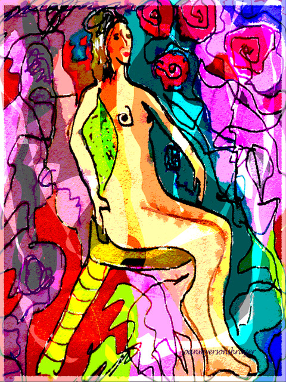

Joan Myerson Shrager
computer drawn art
Joan Myerson Shrager
computer drawn art
Joan Myerson ShragerJoan Myerson Shrager has been a distinguished professional artist for over 30 years and has exhibited her work in over 50 juried and solo shows. She has an undergraduate degree from the University of Pennsylvania and a masters degree from Temple University in psychology. She studied painting, sculpture and ceramics at Moore College of Art and Design, Tyler School of Art, and the University of the Arts and taken many workshops.
"These images have been exhibited printed on glass or canvas. Having just celebrated my 80th birthday, I am once again ready to post my newest images on the MOCA site. It's quite mind boggling to still be at this since my first little desktop Apple with its primitive art software. I used to use Illustrator and now mostly I use Photoshop and have begun some Procreate on my iPad as well. Who knew! Who knew, when I first began sculpting that I'd go to the next level to digitally printed clay decals and photographing my sculpture as a basis for some digital paintings."
Joan Myerson Shrager's website
Sittin on the Dock of the Bay
 |